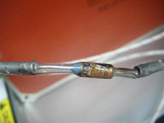

Service History
Subject: UTL NS-7080 Thermo fuse of Hot plate 2 heater zone short circuit because heat tube have melted while running machine
Handler Model: NS-7080 (NS-7080-05, S/N: 121223)
Controller: RC520
Date:10 Aug 2009
Symptom
Heater at Hot plate2 forNS7080 problem.( Request for IFUNT100B and Thermo Fuse replacement).
Mr.Surasak have requested for a replacement IFUNT100B board urgently for their machine trouble.
After Thermo fuse short circuits occurs and affects to their TESTER UNIT too.
Problem occurred on 20 Jan 2009.

Thermo fuse of "hot plate2" short to chassis(base) of handler when handler operate at hot temperature (75C'). Thermo fuse body and sleeve burnt.
Socket heaters of NS7080 #1 and #3 were broken, customer checked socket heater 1A and socket1B, the result is open.
( For good condition heater the resistant around 268 Ohm.)
Action
Cause